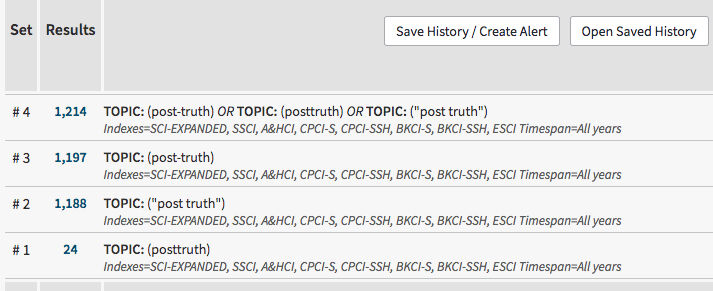
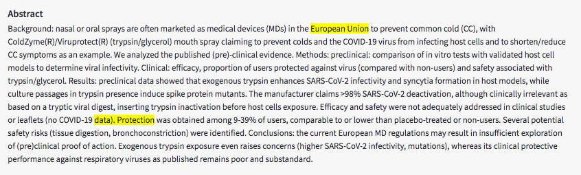

Trainees Edition
Trainers Edition
Trainees Edition
Trainers Edition
14. nodarbība: Efektīvas meklēšanas stratēģijas
Nodarbības apraksts
Nodarbības galvenais mērķis ir izskaidrot dažādas meklēšanas funkcijas un operatorus, kas nepieciešami efektīvas meklēšanas stratēģijas izstrādei.
Nodarbības sekundārais mērķis ir sniegt atbalstu pasniedzējiem, kuri vēlas izmantot nodarbības saturu, lai mācītu savus studentus
Atbilstoši šiem mērķiem, nodarbībā ietverta informācija par meklēšanu, izmantojot Būla operatorus, kontrolēto vārdnīcu, attāluma (proximity) operatorus, Saīsināšanas (?) un Aizstāšanas (*) simbolus, ierobežojumus. Kā arī vadlīnijas par to, kā mācīt šo priekšmetu.
Studenti, sekmīgi pabeidzot šo nodarbību, spēs:
- saprast, kāpēc efektīva meklēšanas stratēģija ir svarīga;
- izprast Būla operatoru lietošanu (AND, OR, NOT);
- izprast kontrolētās vārdnīcas nozīmi;
- izprast un izmantot meklēšanas laukus;
- definēt tuvuma (proximity) operatorus, kā arī atšķirt adjacency un nearby operatorus;
- izprast Saīsināšanas simbolu un Aizstājējzīmju lietošanu.
Pēc nodarbības pabeigšanas pasniedzēji gūs izpratni par priekšmeta mācīšanas vadlīnijām.
Nodarbības struktūra
Šī nodaļa sastāv no sekojošām daļām:
- Nodarbības apraksts (Mērķis, saturs un mācību rezultāti);
- Nodarbības struktūra;
- Vadlīnijas studentiem;
- Vadlīnijas pasniedzējiem (kā sagatavoties; izmantojamās metodes; padomi);
- Saturs (mācību materiāli un vingrinājumi);
- Tests;
- Resursi (izmantotie un ieteicamie avoti);
Nodarbības galvenie uzdevumi, satura izklāsts un mācību rezultāti ir izskaidroti Nodarbības aprakstā. Saturs ietver visus mācību materiālus un ar to saistītos uzdevumus. Tests sastāv no jautājumiem ar vairākiem atbilžu variantiem, kas palīdzēs studentiem novērtēt savu progresu. Resursi sastāv no izmantotajiem avotiem un ieteicamajiem avotiem tālākai pētniecībai. Izmantotie avoti ir satura daļā citēto avotu saraksts. Ieteicamo avotu sarakstā pieejama papildu literatūra, kuru ieteicams izlasīt. Vadlīnijas studentiem ietver norādījums un ieteikumus. Vadlīnijas pasniedzējiem palīdzēs dažādos mācību posmos, sniedzot noderīgus padomus un ieteikumus, kā izmantot šo nodarbību saturu mācību procesā.
Vadlīnijas studentiem
Studentiem ir jāizlasa teksts un jāizpilda uzdevumi. Lai uzzinātu vairāk par tematu, vēlams ieskatīties ieteikto avotu sarakstā. Pēc iepazīšanās ar nodarbības saturu, ieteicams aizpildīt testu, lai novērtētu savu progresu. Ja nepieciešams, var pārskatīt mācību materiālu.
Vadlīnijas pasniedzējiem
Pasniedzēju vadlīnijas ietver ieteikumus un padomus par to, kā izmantot šīs nodarbības saturu, lai apmācītu audzēkņus par efektīvas meklēšanas stratēģijām.
Sagatavošanās
Ieteicams sagatavot prezentāciju (PowePoint/Prezi/Canva), kas papildināta ar vizuāliem materiāliem un kas parāda datubāzes/meklētājprogrammas meklēšanas rezultātus. Kursa laikā ir ļoti ieteicama arī reāllaika demonstrācija.
Darba uzsākšana
Lai panāktu lielāku studentu iesaisti, sākumā var noderēt īss tests (3-5 jautājumi), izmantojot Kahoot vai Mentimeter rīkus. Jautājumi var kalpot gan kā motivējošs instruments, gan kā rīks, ar kura palīdzību iespējams apzināt studentu esošās zināšanas un izpratni par nodarbības tēmu. Daži jautājumu piemēri varētu būt šādi: Kas ir Būla operatori? Kas ir Saīsinājuma simboli? Kā frāžu meklēšanai var izmantot “pēdiņas”?
Ieteicamās metodes
Mācību procesā var tikt izmantotas dažādas metodes, piemēram:
- Lekcija
- Darbs grupās
- Individuālais darbs
- Pašrefleksija
Padomi pasniedzējiem
Iesildīšanās
Lai efektīvi iesaistītu dalībniekus mācību procesā un vienotos par to, kas tiks apgūts nodarbības laikā, tās sākumā var uzdot dažus jautājumus par tēmu. Piemēram, studentiem var uzdot atrast atbildes par vienu vai vairākiem iepriekš pārrunātajiem vaicājumiem, izmantojot meklēšanu tiešsaistē.
Aktivitātes soļi:
- sagatavojiet dažādus vaicājumus, kurus, lai izpildītu, jāizmanto meklēšanas stratēģijas;
- katram vaicājumam atlasiet datubāzi;
- palūdziet studentiem veikt tiešsaistes meklēšanu šiem vaicājumiem;
- palūdziet studentiem saglabāt savu meklēšanas stratēģiju un rezultātus;
- lūdziet studentus dalīties ar saviem rezultātiem un apspriest tos ar citiem dalībniekiem.
Pēc aktivitātes pārliecinieties, vai studenti spēj saprast, ka dažādas meklēšanas stratēģijas sniedz atšķirīgus rezultātus. Studentiem ir jāsaprot efektīvu meklēšanas stratēģiju priekšrocības.
Nodarbības mērķa paskaidrošana
Skaidri jānorāda nodarbības mērķis (šajā gadījumā - izskaidrot, kas ir efektīvas meklēšanas stratēģijas un izprast šo stratēģiju izmantošanas ietekmi uz meklēšanas rezultātiem). Pēc iesildīšanās jautājumiem būs vieglāk noskaidrot mācību mērķus.
Nodarbības satura izklāsts
Prezentējot nodarbības saturu, pārliecinieties, ka mijiedarbojieties ar studentiem un iedrošiniet viņus aktīvi iesaistīties.
Pirms nodarbības
- Pirms nodarbības sagatavojiet vaicājumus, lai dalībnieki varētu praktizēt meklēšanu (sagatavojiet vaicājumus, veiciet šo vaicājumu meklēšanu un izmēģiniet meklēšanu dažādās datubāzes).
Nodarbības laikā
- Nodarbības sākumā pajautājiet dalībniekiem viņu viedokli par to, kāpēc efektīva meklēšanas stratēģija ir svarīga;
- Nodarbības sākumā pajautājiet dalībniekiem, kāda ir efektīvas meklēšanas stratēģijas ietekme uz informācijas izguvi;
- Nodarbības sākumā palūdziet dalībniekiem veikt meklēšanu dotajiem vaicājumiem un saglabāt rezultātus.
Pēc nodarbības
- Pēc tēmu izskaidrošanas palūdziet dalībniekiem veikt tos pašus meklējumus, kurus viņi veica nodarbības sākumā. Piemēram, pēc Būla operatoru izskaidrošanas palūdziet dalībniekiem veikt to pašu vaicājumu, izmantojot Būla operatorus;
- Salīdziniet iepriekšējos saglabātos rezultātus ar jaunajiem rezultātiem;
- Dažas metodes (piemēram, saīsinājumi, aizstājējzīmes, utt.) dažādās datubāzēs var atšķirties. Veiciet vienus un tos pašus vaicājumus dažādās datubāzēs;
- Pārrunājiet rezultātus ar dalībniekiem.
Ieteikumi
- Nodarbībā izmantojiet praktiskus piemērus un uzdevumus.
Noslēgums
Sagatavojiet īsu nodarbības kopsavilkumu un, lai uzsvērtu būtiskākās lietas, uzdodiet studentiem jautājumus, kā piemēram:
Kāpēc efektīvas meklēšanas stratēģijas ir svarīgas?
Pēc diskusijas pārliecinieties, ka studenti saprot, ka meklēšanas stratēģijas ir ļoti svarīgas informācijas izguvei, un ka tās sniedz pētniekiem visaptverošu plānu meklēšanas veikšanai. Efektīvas meklēšanas stratēģiju apzināšanās ļaus dalībniekiem pilnībā un efektīvi apmierināt savas informācijas vajadzības.
Saturs: efektīvas meklēšanas stratēģijas
Ievads
Ziņu pratība ietver izpratni par ziņu nozīmi sabiedrībā, motivāciju meklēt ziņas un spēju atrast, identificēt, atpazīt, kritiski novērtēt un radīt ziņas (Malik, Cortesi & Gasser, 2013, 8.-9.lpp.). Vispārīgāk izsakoties: lai cilvēki būtu izglītoti, ir jābūt prasmēm un zināšanām atrast informāciju, kas atbilst viņu vajadzībām.
Efektīva meklēšanas stratēģija ir svarīga, lai atrastu pētniecības tēmām atbilstošu informāciju. Meklēšanas stratēģija ir visaptverošs plāns pētniecības mērķu sasniegšanai. Pirms uzsākt meklēšanu tiešsaistē (efektīvas meklēšanas stratēģijas veikšanas), ir jānosaka, vai vaicājums ir zināms vienums - vaicājums par faktisku (vai zināmu) avotu vai priekšmeta meklēšana. Zināma vienuma meklēšanā tiek izmantota informācija, kas apraksta vienumu, piemēram, autora vārds, nosaukums, publikācijas nosaukums, utt. “Meklēšana pēc priekšmeta ir vissarežītākā, jo nav iespējams precīzi norādīt, kas jums ir nepieciešams” (Fulton & McGuinness, 2016, 123.lpp.). Jāpiemin, ka efektīvas meklēšanas stratēģijas ir īpaši svarīgas un izšķirošas šāda veida meklēšanai.
Pēc tam, kad ir izvēlēts vaicājuma veids, ir jāizvēlas attiecīgais avots/datubāze (skatīt arī 12. Nodarbības aprakstu). Pēc tam jāveic fasetes analīze un jāizveido loģiskas kombinācijas. ”Fasete ir vārds vai ļoti īsa frāze, kas apraksta vienu jēdzienu vai ideju” (Markey, 2019, 98.lpp.). Piemēram: vai pastāv saistība starp “viltus ziņām” un “sociālajiem medijiem”; šim vaicājumam ir šādas fasetes: viltus ziņas un sociālie mediji.
Pēc tam, kad veikta priekšizpēte, ir jāpiemēro efektīva meklēšanas stratēģija. Šajā sadaļā tiks apskatītas dažas no meklēšanas funkcijām un operatoriem, kas nepieciešami efektīvas meklēšanas stratēģijas izstrādei.
Būla loģika
Būla operatori tiek izmantoti lielākajā daļā informācijas datubāzu un meklētājprogrammu, nodrošinot iespēju apvienot sinonīmus un jēdzienu variantus, lai piekļūtu attiecīgajiem vienumiem (Alexander, 2003, 62.lpp.).
“Būla loģika” (Boolean logic) attiecas uz loģisko attiecību starp meklēšanas vienumiem. AND (latviešu valodā UN), OR (latviešu valodā VAI) un NOT (latviešu valodā NE) ir pamata Būla operatori. Šos operatorus izmanto, lai paplašinātu vai ierobežotu meklēšanu.
- AND apvieno divus terminus, liekot meklēšanas sistēmai atrast avotus, kuros ir abi termini.
- OR - ievieto starp diviem terminiem, liekot meklēšanas sistēmai atrast avotus, kuros ir kāds no terminiem.
- NOT - ievieto starp diviem terminiem, liekot meklēšanas sistēmai izslēgt avotus, kas satur otru norādīto terminu.


1. piemērs: Tēmas meklēšana Web of Science datubāzē
Atslēgvārdi: misinformation, disinformation
Būla operatori: AND, OR, NOT

Rezultāti:
# 1 tiks atlasīti rezultāti par misinformation.
# 2 tiks atlasīti rezultāti par disinformation.
# 3 tiks atlasīti rezultāti par abiem pieprasījumiem “misinformation” un “disinformation” vienlaicīgi.
# 4 tiks atlasīti rezultāti par abiem informācijas meklēšanas veidiem, kā arī par katru no tiem atsevišķi.
# 5 tiks atlasīti rezultāti par “misinformation” un izslēgti rezultāti par “disinformation”.
2. piemērs: Tēmas meklēšana Web of Science datubāzē
Atslēgvārdi: posttruth, post truth, post-truth
Būla operatori: OR

Rezultāti:
# 1 tiks atlasīti rezultāti par posttruth
# 2 tiks atlasīti rezultāti par “post truth”
# 3 tiks atlasīti rezultāti par post-truth
# 4 tiks atlasīti rezultāti, kas satur atsevišķus meklēšanas vienumus posttruth vai “post truth”, vai post-truth; vai tādas kombinācijas kā “posttruth” un “post truth”, “posttruth” un post-truth, “post truth” un post-truth; vai visi trīs meklēšanas vienumi kopā vienā ierakstā.
3. piemērs: Tēmas meklēšana Web of Science datubāzē
Atslēgvārdi: www, world wide web, “world wide web”
Būla operatori: OR

Rezultāti:
# 1 tiks atlasīti ieraksti, kuru nosaukumā ir www
# 2 tiks atlasīti ieraksti, kuru nosaukumā ir world wide web
# 3 tiks atlasīti ieraksti, kuru nosaukumā ir gan world wide web, gan www; vai ieraksti, kuru nosaukumā ir tikai viens no meklēšanas vienumiem.
# 4 tiks atlasīti ieraksti, kuru nosaukumā ir gan “world wide web”, gan www; vai ieraksti, kuru nosaukumā ir tikai viens no meklēšanas vienumiem.
4. piemērs: Tēmas meklēšana Web of Science datubāzē
Atslēgvārdi: propaganda, political
Būla operators: NOT

Rezultāti:
# 1 tiks atlasīti rezultāti par tēmu propaganda.
# 2 tiks atlasīti rezultāti par tēmu political.
# 3 tiks atlasīti rezultāti par tēmu propaganda, bet izslēgti - par tēmu political.
Iekavas ()
Iekavas izmanto, lai sakārtotu loģisko operatoru izpildes secību (t.i. izveidotu sarežģītāku meklēšanas ķēdi) (Alexander, 2003, 62.lpp.). Iekavas palīdz algoritmam saprast, kuri ir vienādas nozīmes vārdi un dod datubāzei komandu vispirms meklēt iekavās esošos vienumus. Sistēma apstrādā Būla komandu, meklējot sagrupētos vārdus, sākot ar visdziļakajām iekavām.
1. piemērs: Tēma = ((ziņas VAI mediji) UN pratība) NE "jaunie mediji"
Šajā piemērā datubāze vispirms atradīs rezultātus par ziņu pratību vai medijpratību, un izslēgs rezultātus par tēmu “jaunie mediji”.
2. piemērs: Tēmas meklēšana Web of Science datubāzē
Atslēgvārdi: ziņu pratība, medijpratība, informācijas pratība, pēcpatiesība, viltus ziņas, jaunie mediji
Būla operatori: AND, OR, NOT, ()

Meklēšanas rezultāti:
# 1 tiks atrasti rezultāti par tēmām ziņu pratība un informācijpratība; vai medijpratība un informācijpratība
# 2 vispirms atradīs ierakstus par tēmām ziņu pratība un informācijpratība; vai medijpratība un informācijpratība, un izslēgti rezultāti, kas ietver “viltus ziņas” vai pēcpatiesību, vai “jaunie mediji”.
Vingrinājumi
- Mēģiniet aprakstīt, kādus rezultātus jūs iegūtu, izmantojot zemāk esošās Būla komandas. Pamēģiniet veikt meklēšanu kādā no daudznozaru datubāzēm (piemēram, ScienceDirect, Academic Search Ultimate).
magazines OR journals NOT books
(magazines OR journals) NOT books
(magazines OR journals) AND books
magazines OR (journals AND books)
(magazines OR (journals NOT books)) AND libraries - Izvēlieties atslēgvārdus par tēmu, kas Jums interesē un veiciet meklēšanu, izmēģinot vairākas Būla operatoru kombinācijas.
Kontrolētās vārdnīcas
Datubāzes ierakstu indeksēšanai izmanto kontrolētas vārdnīcas; šī ir viena no būtiskākajām atšķirībām meklēšanas ziņā starp datubāzēm un tīmekli (Fulton & McGuinness, 2016, 131.lpp.).
Kontrolētā vārdnīca ir “organizēts vārdu un frāžu izkārtojums, ko izmanto satura indeksēšanai un/vai satura izgūšanai, pārlūkojot vai meklējot" (Harpring, 2010). Citiem vārdiem sakot, kontrolētā vārdnīca ir saraksts ar līdzvērtīgiem terminiem, atspoguļojot tos sinonīmu virknēs vai atlasīto terminu sarakstā. Tā sakārtota hierarhiskā struktūrā, nosakot attiecības starp plašākiem, šaurākiem un asociatīviem terminiem, kā arī izmantojumu (Used for) (Morville & Rosenfeld, 2007, 194.lpp.). Lai palielinātu meklēšanas efektivitāti un izgūtu saistītos ierakstus, ieteicams izmantot terminus no kontrolētām vārdnīcām. Gadījumā, ja lietotāja izvēlētais termins un sistēmas lietotais termins nav viens un tas pats, datubāzes nodrošina tiešsaistes tēzauru/priekšmetu terminus/rādītājus, lai atvieglotu sistēmā lietoto atbilstošo terminu vai deskriptoru izvēli (Fulton & McGuinness, 2016, 132.lpp.). Kontrolētā vārdnīca pazīstama arī kā priekšmetu rādītājs, tēzaurs vai deskriptoru vārdnīca (Bell, 2015, 33.lpp.). Ar terminu “tēzaurs” apzīmē noteiktas kontrolētās vārdnīcas…Tezaurs var nodrošināt sarakstu ar priekšmetu rādītājiem hierarhiskā struktūrā, parādot attiecības starp terminiem (plašāks, šaurāks, saistīts), kā arī sniegt norādes uz visatbilstošāko izmantojumu (Bell, 2015, 48. lpp.).
- Plašāki termini (Broader terms) parāda “hierarhiskas attiecības starp diviem kontrolētiem vārdnīcas terminiem tēzaurā, kas izsaka vai nu veselā un daļas vai ģints-sugas attiecības, kur plašākais termins apzīmē veselumu vai ģinti” (Markey, 2019, 367.lpp.).
- Šaurāki termini (Narrower terms) parāda "hierarhisku saistību starp diviem kontrolētiem vārdnīcas terminiem tēzaurā, kas izsaka vai nu veselā un daļas, vai ģints un sugas attiecības, kur šaurākais termins apzīmē daļu vai sugu" (Markey, 2019, 373. lpp.).
- Asociatīvie termini (Related terms) parāda "kontrolētas vārdnīcas terminu tēzaurā, kas ir saskaņots ar citu kontrolētās vārdnīcas terminu. Tā kā abi termini atrodas vienā hierarhijas līmenī, tie nav hierarhiski saistīti. To sauc arī par “asociatīvām attiecībām” (Markey, 2019, 375. lpp.).
- Izmantojums (Used for) parāda “autoritatīvajā ierakstā neizmantoto sinonīmu sarakstu autorizētajam personvārdam, priekšmetam vai nosaukumam” (Markey, 2019, 379.lpp.).
1.piemērs: Library, Information Science & Technology tēzaura pārlūkošana
Termins: pratība
Ievadot meklēšanas vienumu tēzaurā (šajā piemērā - pratība (literacy)), varat izgūt ierakstu, kas izskatās apmēram šādi:

Literacy (latviešu valodā - pratība) ir meklēšanas vienums, kuru izmanto, lai aprakstītu informācijas vienumus Library, Information Science & Technology datubāzē. Plašāks termina piemērs terminam “pratība” ir izglītība (education), savukārt datorprasme (computer literacy) un metapratība (metaliteracy) ir šaurāku terminu piemēri. Neizglītoti cilvēki (illiterate) un lasītāju loks (readership) ir saistīto terminu piemēri. “Illiteracy” (Used for) vietā vajadzētu lietot terminu “literacy”.
Bells (2015, 33.-34.lpp.) norāda šādas kontrolētās vārdnīcas priekšrocības:
- Tiek ietaupīts laiks, domājot par visiem iespējamiem termina sinonīmiem vai alternatīviem rakstības veidiem. Piemēram, ja apģērbs ir piešķirts kā priekšmeta aprakstgalva visiem dokumentiem, kas saistīti ar “apģērbu”, nav nepciešams domāt par citiem saistītiem terminiem, piemēram, kleita, kostīms, tērps utt.
- Kontrolētās vārdnīcas izmantošanai vajadzētu padarīt meklēšanu pilnīgāku (ja indeksi ir uzticami/konsekventi attiecībā uz priekšmeta aprakstgalvas piešķiršanu terminiem).
- Priekšmetu apraksgalvās nošķirti atslēgvārdi, kam ir vairākas nozīmes (piemēram, merkūrijs - planēta, mašīna, dievs vai metāls?). Autoru vārdiem autoritātes kontrole nodrošina vienu veidu, kā meklēt autoru, kas pazīstams ar vairākiem pseidonīmiem (piemēram, Marks Tvens/Samuels Klemenss).
- Nodrošina drošu un noderīgu ieejas punktu iepriekš vēl nezināmā priekšmetu laukā. Pat ja jūs nezināt neko par tēmu, jums ir pārliecība, ka priekšmetu sarakstā iekļautie termini ir pareizi un piemēroti. Pārlūkojot sarakstu un iegūstot priekšstatu par terminiem (jo īpaši, ja ir atsauces uz "skatīt" vai "izmantot" vai "skatīt arī"), jūs bieži varat iegūt idejas, kas palīdzētu izstrādāt vai pilnveidot meklēšanas stratēģiju.
Meklēšanas lauks
Meklēšanas lauks ļauj ierobežot meklēšanas vienumus un frāzes noteiktos laukos, nodrošinot atbilstošākus meklēšanas rezultātus (Alexander, 2003, 62.lpp.). Piemēram, meklēt konkrētu nosaukumu var laukā “publikācijas nosaukums”, tādejādi samazinot sistēmas meklēšanas apstrādes laiku.
Datubāzes ierakstos tiek izmantoti lauki, lai norādītu informāciju par avotiem un aprakstītu noteikta veida datus, piemēram, autoru, nosaukumu vai kopsavilkumu. “Kad meklēšanas sistēmas indeksē vērtības laukos, tās seko laukiem, no kuriem vērtības tika iegūtas” (Markey, 2019, 112.lpp.).
Meklēšanas lauku nosaukumi katrai datubāzei var būt atšķirīgi. Daži lauku nosaukumu piemēri: autors, autora piederība, nosaukums, avots (publikācijas nosaukums, žurnāla vai grāmatas nosaukums), atslēgvārdi, priekšmets, tēma, finansētājs, gads utt. Dažās datubāzēs tiek izmantoti lauku kodi, piemēram, AU: Autors; TS: Tēma, lai veiktu meklēšanu. Šie kodi ir specifiski konkrētai datubāzei.
1.piemērs: Meklēšanas lauku nosaukumi un definīcijas no IEEE Xplore datubāzes:
|
Lauks |
Definīcija |
|
Kopsavilkums (Abstract) |
Īss žurnāla raksta, konferences darba, standarta, grāmatas, grāmatas nodaļas vai kursa satura kopsavilkums vai izklāsts. |
|
Autora piederība (Author Affiliation) |
Dokumentos uzskaitīto autoru institucionālā piederība (universitāte, valsts aģentūra, korporācija u.c.). |
|
Autora atslēgvārdi (Author Keywords) |
Autora sniegtie termini, kas apraksta dokumenta tēmas vai priekšmetus. |
|
Autori (Authors) |
Dokumentā norādītā autora vārds. |
|
Nosaukums (Document Title) |
Dokumenta nosaukums (žurnāla raksts, konferences raksts, standarts, grāmatas nodaļa vai kurss). |
|
Pilnteksts un metadati (Full Text & Metadata) |
Pilnteksts attiecas uz raksta, standarta utt. tekstu. Metadati ir detalizēta informācija, kas apraksta pilntekstu, piemēram, autora vārds, publicēšanas datums un DOI. |
|
Priekšmetu saraksts (Index Terms) |
Lauks, kas ļauj datubāzes lietotājiem meklēt autora atslēgvārdus, IEEE terminus, INSPEC un Mesh terminus. |
|
Izdevuma nosaukums (Publication Title) |
Izdevuma nosaukums. |
Avots: IEEE Xplore: Resources and Help
2. piemērs: Meklēšana, izmantojot laukus Web of Science datubāzē
2.1. Meklēšana, izmantojot laukus (tēma, nosaukums, autors, publikācijas nosaukums, izdošanas gads, dokumenta veids un organizācijas nosaukums) Web of Science datubāzē

2.2. Rezultāts no Web of Science datubāzes

Attāluma meklēšana (Proximity)
Proximity meklēšana ļauj norādīt, ka vārdam A jāatrodas tālāk vai tuvāk no vārda B. Piemēram, ja mēģināt atrast informāciju par datu aizsardzību Eiropas Savienībā, izmantojot tādu meklēšanas stratēģiju kā:
TS = "European Union" AND "data protection"
noteikti tiks atrasti atbilstoši rezultāti, bet, iespējams, būs arī daudzi neatbilstoši rezultāti, jo meklēšanas vienumi var atrasties jebkurā vietā izgūtajā dokumentā.
Piemērs:

Lielākā daļa datubāzes sistēmu ļauj iestatīt sarežģītāku meklēšanu, kurā tiek noteikts attālums starp meklēšanas vienumiem. Tas nozīmē, ka var norādīt, cik tuvu viens otram un dažreiz kādā secībā meklēšanas vienumiem ir jāparādās tekstā, lai tie atbilstu izguvei. To sauc par attāluma meklēšanu (Bell, 2015, 49.lpp.). Attāluma meklēšana palīdz sasniegt lielāku precizitāti izgūtajos dokumentos.
Attāluma meklēšanā tiek izmantoti īpaši operatori, kurus sauc par attāluma (proximity) operatoriem.
Operatori
Balstoties uz Markey (2019, 375.lpp.), attāluma operators ir operators meklēšanas sistēmā, kas nosaka divus kritērijus:
- Cik tuvu vārdiem ir jāatrodas tekstā;
- Vai vārdu secībai ir nozīme.
Attāluma operatori palīdz sašaurināt vai paplašināt meklēšanu un uzlabot meklēšanas rezultātus. Piemēram, veicot meklēšanu, meklēšanas laukā ierakstot “fake news” NEAR3 “false information” vai “fake news” AROUND (3) “false information”, iegūtu konkrētākus rezultātus nekā meklējot pēc “fake news” AND “false information”.
Diemžēl operatoru nosaukumi un sintakse dažādās sistēmās atšķiras.
Šeit ir daži piemēri:
- WITHIN → Wn
misinformation W2 social media
Tas nozīmē, ka atslēgvārdi “misinformation” un “social media” atrodas ne tālāk kā 2 vārdus viens no otra norādītajā secībā. Veicot meklēšanu, piemēram, EBSCOhost datubāzē, parādās tādi rezultāti, kā:
… misinformation sharing on social media…
…misinformation on social media…
- PRE → Pre/n or P/n
"European Union" PRE/5 framework
Tas nozīmē, ka meklēšanas vienumam “European Union” ir jābūt pirmajam un pirms “framework” nevar būt vairāk kā 5 vārdi. Veicot meklēšanu, piemēram, ProQuest datubāzē, parādās tādi rezultāti, kā:
...in the European Union Legal Framework…
…European Union and Turkey in the Framework of …
...European Union Common Agricultural Policy under WTO Framework…
-
- NEAR → Near/n or N/n or Nn
disadvantaged NEAR/5 children
Tas nozīmē, ka “disadvantaged” un “children” nedrīkst atrasties ne vairāk kā piecu vārdu attālumā viens no otra neatkarīgi no vārdu secības. Veicot meklēšanu, piemēram, IEEE Xplore datubāzē, parādās tādi rezultāti, kā:
.school for children from disadvantaged circumstances
… disadvantaged primary school children..
...disadvantaged, preschool, gifted children…
…. children from among culturally different/educationally disadvantaged….
1. piemērs: Tēmas meklēšana Web of Science datubāzē
Atslēgvārdi: “fake news”, “false information”
Attāluma operators: NEAR

Rezultāti:
# 2 tiks atrasti ieraksti ar atslēgvārdiem “fake news” un “false information”, kam jāatrodas ne vairāk kā trīs vārdu attālumā vienam no otra neatkarīgi no vārdu secības.
2. piemērs: Meklēšana Google
Atslēgvārdi: “fake news”, “false information”
Attāluma operatori: AROUND

Dažās datubāzēs un avotos attāluma operatoru vietā tiek izmantoti blakus operatori - adjacency un nearby. Atšķirība starp adjacency un nearby operatoriem atrodama vārdu secībā.
Adjacency (blakus) operatori norāda, ka meklēšanas vārdiem ir jāatrodas blakus vienam otram, un vārdu secībai ir nozīme (Markey, 2019, 365.lpp.). Kā piemērus var norādīt Within (W), Pre un ~ .
Piemērs meklēšanas rezultātiem, kas atbilstu “bandwagon effect” vai “bandwagon worker effect”, bet neatbilstu “effect of bandwagon”, būtu:
EBSCOhost: bandwagon W2 effect
ProQuest: bandwagon PRE/2 effect
Taylor & Francis Online: “bandwagon effect” ~2
Nearby (netālu esoši) operatori norāda, ka meklēšanas vārdi tiek atdalīti ar vienu vai vairākiem vārdiem un meklēšanas vārdu secībai nav nozīmes. Kā piemērus var norādīt NEAR, N un ~.
Rezultātu meklēšanas piemērs, kas atbilstu “European Union general data protection”, “data protection in the European Union”, “European Union developments on data protection” būtu:
EBSCOhost: “data protection” N2 “European Union”
ProQuest: bandwagon NEAR/2 effect
Taylor & Francis Online: "data protection" "european union"~2
Frāžu meklēšana
Frāžu meklēšanu pielieto, pēdiņās ievietojot vārdus, kurus vēlaties meklēt kā precīzu frāzi (piemēram, “digitālā pratība”). Frāžu meklēšana nodrošina, ka meklēšanas vienumi meklēšanas rezultātos būs precīzi atbilstoši. Šī pieeja palīdz sašaurināt meklēšanu, izslēdzot rezultātus, kuros parādās abi termini, bet ne tieši kopā kā precīza atbilstība (Fulton and McGuinness, 2016, 136.lpp.). Daudzās datubāzēs (EBSCO, WoS, JSTOR u.c.) un meklētājprogrammās, piemēram, Google, Bing vai citās, meklējamie termini kā precīza frāze tiek ievietoti pēdiņās (Bell, 2015, 53.lpp.).
- Dažās datubāzēs, piemēram, ScienceDirect vai Scopus, frāzes meklēšanā pieturzīmes tiek ignorētas. Piemēram:
”heart-attack” un “heart attack”
piedāvās tos pašus rezultātus.
- Dažās datu bāzēs, piemēram, Scopus, precīzas atbilstības meklēšanai jāizmanto iekavas {}. Piemēram:
“heart attack” and {heart attack}
nepiedāvās tos pašus rezultātus. Jo, izmantojot pēdiņas - “heart attack” - tiks piedāvāti rezultāti, kas satur arī “heart attacks”, savukārt, izmantojot iekavas, tiks piedāvāti rezultāti, kas precīzi atbilst meklētajam vienumam.
Saīsinājumi un aizstājējzīmes
Saīsinājumi
Saīsināšana ir efektīvs veids, kā paplašināt meklēšanu, meklējot viena vārda dažādus variantus, piemēram, daudzskaitļa formas. Saīsināšana ļauj meklēt, izmantojot vārda celmu, kas ļauj izgūt visus vārdus, kas sākas ar norādīto vārda daļu (Bell, 2015, 54.lpp.). Lai veiktu šādu meklēšanu, vārda celmam tiek pievienoti saīsināšanas simboli, piemēram, *, ?, $.
Piemēri:
- lai izgūtu dokumentus, kas satur terminus library, libraries, librarian un librarianship, vārda celmam librar* tiek pievienota zvaigznīte (*).
- lai izgūtu dokumentus, kas satur terminus information behaviour, information behaviour, informational behaviour, informational behaviour, information-behaviour, informativeness behaviour, vārda celmiem informa* beha* iek pievienota zvaigznīte (*).
Ir svarīgi apzināties, ka saīsināšanas simboli dažādās datubāzēs vai meklētājprogrammās var atšķirties (Fulton and McGuinness, 2016, 137.lpp.). Visbiežāk izmantotie ir:
- *
- ?
- !
-$
Ja celms ir atsevišķs vārds, šis vārds tiks iekļauts meklēšanas rezultātos (Fulton and McGuinness, 2016, 137.lpp.). Piemēram:
-
pielietojot vārdu journal*, tiks izgūti ieraksti, kas satur vārdus journal, journals, journalism, journalist, journalists, journalists’, journalistic, journaling
Pārmērīga vārdu saīsināšana var izraisīt neatbilstošus rezultātus. Piemēram:
- Pielietojot vārdu cat*, tiks izgūti ieraksti ar vārdiem cat, catalyst, catalogues, catastrophic. Ja meklēšanas vienums ir cat (kaķis), vaicājums, piemēram, cat vai cats, sniegs precīzākus rezultātus.
Dažās datubāzēs daudzskaitļi un pareizrakstības varianti tiek iekļauti automātiski. Piemēram, ScienceDirect datubāzē:
“color code” vai “colour code” vai “colour codes”
piedāvās tādus pašus rezultātus.
Aizstājējzīmes
Aizstājējzīmes darbojas līdzīgi kā saīsināšana. Simbols, piemēram, *, ?, !, tiek izmantots, lai meklētu terminus, kurus var uzrakstīt dažādos veidos. Tie ir noderīgi, meklējot vārdus, kuros izmantota gan amerikāņu, gan britu angļu valodas pareizrakstība (piemēram, licence un license). Vārdā parasti tiek ievietots simbols, lai aizstātu vienu burtu (Fulton and McGuinness, 2016, 13.lpp.).
Piemēram,
- pielietojot aizstājējzīmi “?” → licen?e tiks iegūti rezultāti → licenCe, licenSe
Jūs varat izmantot aizstājējzīmi "?" , lai izgūtu vārdu vienskaitļa un daudzskaitļa formas, piemēram, woman un women:
- wom?n → womAn, womEn
Aizstājējzīme visbiežāk tiek izmantota, lai aizstātu tikai vienu burtu (Bell, 2015, 56.lpp.), bet dažās datubāzēs izmantota kā nulles vai vairāk rakstzīmju aizstājēja.
Piemēram, pielietojot aizstājējzīmes Web of Science datubāzē:
- Zvaigznīte (*) apzīmē jebkuru rakstzīmju grupu, ieskaitot nevienu rakstzīmi.
f*food → fastfood, futurefood, frankenfood, fishfood, fitfood
- Jautājuma zīme (?) apzīmē jebkuru atsevišķu rakstzīmi.
organi?e → organiSe, organiZe
- Dolāra zīme ($) apzīmē nulli vai vienu rakstzīmi.
colo$r → color, coloUr
Meklēšanas vienumā var apvienot vairākas aizstājējzīmes. Piemēram,
-
organi?ation* → organisation, organization, organizations, organizational
Piezīmes
1- Ņemiet vērā, ka aizstājējzīmēm izmantotie simboli ir tādi paši kā saīsināšanai izmantotie simboli, taču to funkcija mainās atkarībā no datubāzes. Piemēram, vienā datubāzē var izmantot “!” saīsināšanai un “*” aizstājējzīmei, savukārt citā tas var būt pretēji (Bell, 2015, 56. lpp.).
2- Ņemiet vērā, ka dažās datubāzēs nav atšķirības starp aizstājējzīmēm un saīsinājumiem. Piemēram, lai Scopus datubāzē izmantotu “*” (zvaigznīti) kā aizstājējzīmi,
criminal* liab*
tiks izgūti rezultāti kā criminally liable and criminal liability.
3- Ņemiet vērā, ka dažās datubāzēs daudzskaitļi un pareizrakstības varianti tiek iekļauti automātiski. Piemēram,
heart attack
tiks izgūti rezultāti, tostarp heart attacks
anesthesia
tiks izgūti rezultāti, tostarp anaesthesia
4- Ņemiet vērā, ka dažās datubāzēs, izmantojot vārda vienskaitļa formu, vairumam vārdu tiek izgūtas vienskaitļa, daudzskaitļa un piederības formas. Piemēram,
criterion
tiks izgūti rezultāti, tostarp criteria un criterion
5- Ņemiet vērā, ka dažās datubāzēs, kad starp aizstājējzīmi un vārdu tiek ievietota defise (-), aizstājējzīme tiek atmesta. Piemēram,
*-art tiks meklēts kā art
art-* tiks meklēts kā art
(Scopus, 2021).
Meklēšanas vaicājumu precizēšana
Gandrīz visas datu bāzes un meklētājprogrammas ļauj lietotājiem atlasīt opcijas, lai ierobežotu vai sašaurinātu meklēšanas rezultātus.
Piemēram; izdošanas gads, raksta/dokumenta veids (piem., apskata raksti, pētnieciskie raksti, grāmatas nodaļa), avota veids (piem., žurnāls, grāmata), publikācijas nosaukums, autors, priekšmetu jomas (neirozinātne, psiholoģija u.c.), atslēgvārds, piekļuves veids (piemēram, atvērtā piekļuve), piederība (piemēram, Latvijas Universitāte) un valoda (piemēram, spāņu).
Šie ir daži no ierobežotājiem, kurus var izmantot, lai uzlabotu meklēšanas rezultātus vai ierobežotu meklēšanas rezultātus.
1. piemērs: Piemērs rezultātu precizēšanai Web of Science datubāzē:

Tests
Izmantotie informācijas avoti
Alexander, J.O. (2003). Library Applications. H. Bidgoli (Ed.), In Encyclopedia of Information Systems, (p. 57-76). Elsevier.
Bates, M.J. (1979). Information Search Tactics. Journal of the American Society for Information Science, 30, 205-214.
Bell, S.S. (2015). Librarian’s Guide to Online Searching: Cultivating Database Skills for Research and Instruction. California: Libraries Unlimited.
EBSCO Connect (2018). Searching with Boolean Operators. Retrieved from https://connect.ebsco.com/s/article/Searching-with-Boolean-Operators?language=en_US
Fulton, C. and McGuinness, C. (2016). Digital Detectives: Solving Information Dilemmas in an Online World. Amsterdam: Chandos Publishing.
Harpring, P. (2010). Introduction to controlled vocabularies: Terminology for art, architecture, and other cultural works. J. Paul Getty Trust. Retrieved from http://www.getty.edu/research/publications/electronic_publications/intro_controlled_vocab/index.html
IEEE Xplore: Resources and Help. (2021). Retrieved from https://ieeexplore.ieee.org/Xplorehelp/searching-ieee-xplore/command-search#summary-of-data-fields
Malik, M., Cortesi, S.C., and Gasser, U. (October 18, 2013). The Challenges of Defining 'News Literacy'. Berkman Center Research Publication No. 2013-20, DOI: http://dx.doi.org/10.2139/ssrn.2342313
Markey, K. (2019). Online Searching: A Guide to Finding Quality Information Efficiently and Effectively (2nd edition). Lanham: Rowman & Littlefield.
Morville, P. and Rosenfeld, L. (2007). Information Architecture for the World Wide Web. Farnham: O'Reilly.
Scopus: Access and use Support Center. (2021). Retrieved from https://service.elsevier.com/app/answers/detail/a_id/11213/c/10545/supporthub/scopus/
Ieteicamā literatūra
Brown, C.C. (2021). Librarian's Guide to Online Searching: Cultivating Database Skills for Research and Instruction (6th Edition). Libraries Unlimited.
Dotto, C. & Smith, R. (October 2019). First Draft's Essential Guide to: Newsgathering and Monitoring on the Social Web. Retrieved from https://firstdraftnews.org/wp-content/uploads/2019/10/Newsgathering_and_Monitoring_Digital_AW3.pdf?x35395
Li, L. (2014). Scholarly information discovery in the networked academic learning environment. Oxfordshire, [England] : Chandos Publishing.
Mann, T. (2015). The Oxford Guide to Library Research (4th ed.). Oxford University Press.
Ieteicamie video
Boucher, A., Riesen, K., & Simpson, L. Basic Search Strategies for Systematic Reviews.